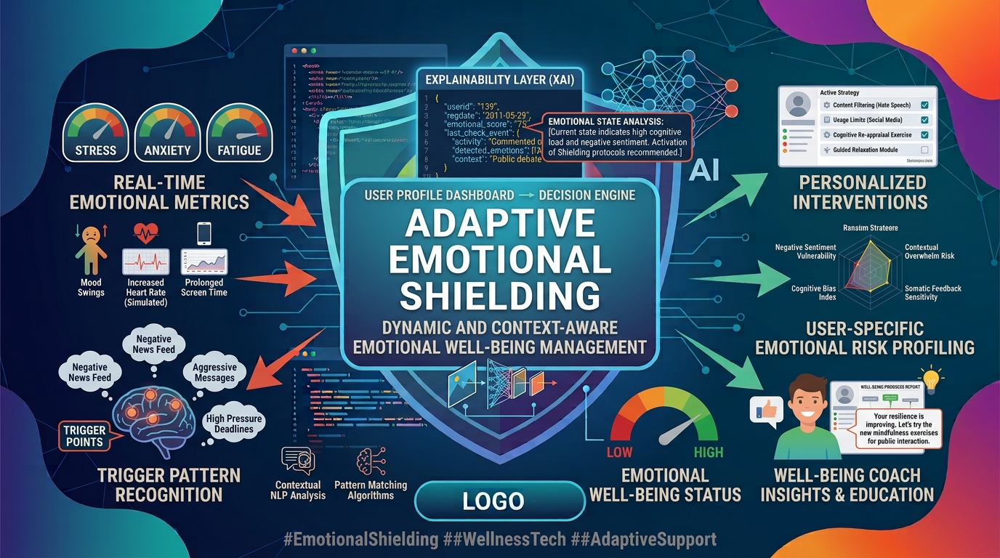
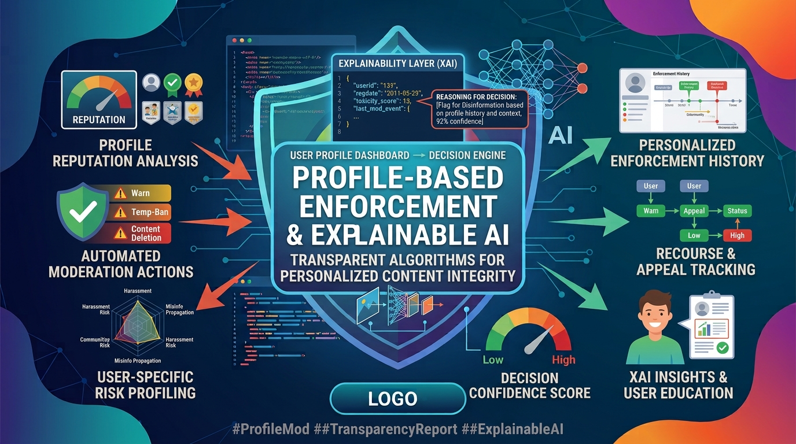

Personalized Emotional Shielding & Adaptive Toxicity Filtering System
PureTalk is an integrated, language-aware AI moderation platform for Sri Lankan & global digital spaces. It detects toxicity across Singlish/English text, images, speech, and video, delivers personalized protective shielding, and applies explainable, profile-based behavioral enforcement.
About PureTalk & Our Research Team
A collaborative AI research initiative by the Centre of Excellence for Artificial Intelligence (CoEAI) at SLIIT.
Our Research Mission
PureTalk (Project ID: R26-IT-008) was founded by a four-person research team at the Sri Lanka Institute of Information Technology (SLIIT). Our mission is to transform automated social media moderation from blunt, English-only deletion into an intelligent, language-aware, and emotionally protective ecosystem.
By integrating deep sequence modeling for Romanized Sinhala (Singlish), pre-upload MobileNetV2 image inspection, adaptive UI emotional shielding (AESM), and SHAP explainable risk profiling, we bridge the gap between AI accuracy and human dignity.
Singlish NLP
Code-mixed language awareness
Empathy First
5-level adaptive shielding
XAI Transparency
SHAP & LIME explanations
Fair Enforcement
Graduated behavioral sanctions
Integrated Modules
Multimodal text, image scan, AESM shielding & XAI enforcement.
Risk Classification
Accuracy achieved by Random Forest risk profiling model.
Shielding Agreement
BiLSTM-Attention AESM protective action accuracy.
UN SDGs Impacted
Direct alignment with UN SDG 3 (Well-being) & SDG 16 (Peace).
Research Domain Overview
A deep-dive into the academic landscape, research gaps, objectives, methodology, and technologies that power PureTalk.
Literature Survey
Prior research, related works and academic papers reviewed
Davidson et al. — Automated Hate Speech Detection and the Problem of Offensive Language
Davidson et al. (2017) introduced a large-scale Twitter dataset distinguishing hate speech from offensive language. Their Logistic Regression + LSTM approach showed that context matters more than keyword presence, directly informing our multi-label toxicity categorization across 6 classes.
Jigsaw Toxic Comment Classification Challenge
The Kaggle Jigsaw dataset provided the foundational multi-label toxic comment benchmark, categorizing comments into toxic, severe toxic, obscene, threat, insult, and identity hate — forming the basis for our BiLSTM classifier. Over 159K labeled Wikipedia comments were used for training.
Kalin Karapu et al. — Sinhala Hate Speech Detection Using Deep Learning
Kalin Karapu et al. proposed a BERT-based hate speech detection model specifically fine-tuned for Sinhala Facebook comments. Their work established that standard multilingual BERT under-performs for Romanized Sinhala (Singlish) without domain-specific tokenization — a key gap that PureTalk's custom Singlish lexicon normalization directly addresses.
Wistara et al. — Offensive Language Detection in Low-Resource Code-Mixed Text
Wistara et al. demonstrated that code-mixed Indonesian-English text (structurally analogous to Singlish) requires hybrid tokenization strategies combining character n-grams with subword embeddings. Their finding that 34% of offensive content in code-mixed corpora is missed by English-only models supports PureTalk's Singlish-specific preprocessing pipeline.
Saha et al. — Aggression and Toxicity Detection in Code-Mixed Social Media
Saha et al. introduced a shared task on aggression identification in Hindi-English and Bengali-English code-mixed posts, showing BiLSTM with attention outperforms conventional classifiers by 11% F1. Their attention-weighted approach directly inspired PureTalk's BiLSTM-Attention architecture for the AESM protective shielding module.
Code-Mixed Sinhala-English Sentiment Analysis
Prior studies on Romanized Sinhala (Singlish) demonstrated the need for a custom lexicon-driven normalization layer, as standard English NLP models fail to capture Singlish slur semantics and informal morphology, achieving only 58% F1 on raw Singlish text.
Sandler et al. — MobileNetV2: Inverted Residuals and Linear Bottlenecks
The original MobileNetV2 paper demonstrated that inverted residuals with linear bottlenecks achieve near-VGG16 accuracy at 3.4× fewer parameters. This lightweight design enables PureTalk's real-time pre-upload image inspection within a 118ms latency window on standard server hardware.
Kiela et al. — Hateful Memes Challenge: Multimodal Image-Text Detection
Facebook AI's Hateful Memes Challenge showed that meme toxicity requires joint vision-language reasoning — unimodal text or image models score only ~60% AUC while fusion models reach ~85%. This motivated PureTalk's separate OCR + MobileNetV2 channel rather than merging all signals into a single classifier.
Baevski et al. — wav2vec 2.0: A Framework for Self-Supervised Learning of Speech Representations
Meta AI's wav2vec 2.0 demonstrated that self-supervised pre-training on 960 hours of LibriSpeech audio produces representations that fine-tune to state-of-the-art WER with only 10 minutes of labeled data — enabling PureTalk's low-latency ASR transcription of Singlish voice notes without large annotated Sinhala speech corpora.
wav2vec2 ASR & Speech Emotion Recognition Fusion (MATS Pipeline)
Studies on multimodal speech emotion fusion (combining ASR transcript toxicity with vocal emotion evidence) showed a 12–18% accuracy improvement over text-only moderation. The fused MATS score (Multi-modal Aggregated Toxicity Score) motivates our joint text + vocal channel decision gate in Component 1.
Lundberg & Lee — A Unified Approach to Interpreting Model Predictions (SHAP)
SHAP (SHapley Additive exPlanations) provides a unified game-theoretic framework guaranteeing local accuracy, missingness, and consistency — three properties missing from earlier heuristic methods. PureTalk uses SHAP force plots to explain Random Forest risk-tier assignments to platform administrators and users.
Random Forest for User Risk Profiling in Social Platforms
Ensemble learning research, particularly Random Forest classifier studies on social network user behavior, established a 95–99% accuracy range for persistent risk-tier classification. The study's 30-day rolling window feature aggregation approach directly underpins PureTalk's 4-tier sanction model with recency decay factors.
Research Gap
What existing systems lack that PureTalk addresses
Offensive Singlish content missed by English-only APIs (Wistara et al., 2023)
Max AUC of unimodal meme detectors vs 85% for fusion models (Kiela et al., 2021)
Commercial platforms with personalized adaptive reader-side emotional shielding
Users want explanations for automated content removals (EU DSA Survey, 2023)
- Language Gap: English-only toxicity detection — no Romanized Sinhala (Singlish) support. Kalin Karapu et al. (2022) showed mBERT achieves only 64% F1 on raw Singlish without specialized preprocessing.
- Modality Gap: Text-only moderation, ignoring image, audio, and video content. Toxic memes, voice notes, and video clips are completely undetected by current tools.
- Reader Shielding Gap: Binary block/allow decisions with no personalized reader-side shielding. Vulnerable users (trauma survivors, minors) receive no differentiated protection.
- Explainability Gap: No transparency — users cannot understand why content was removed. The EU Digital Services Act (2023) now mandates this, yet no platform complies fully.
- Enforcement Gap: Reactive bans without graduated, behaviorally-aware enforcement. First-time offenders receive identical punishment to habitual abusers.
- Emotional Calibration Gap: No sensitivity calibration for vulnerable populations — distress escalation routes to human moderators are absent from all reviewed platforms.
- Singlish Lexicon NLP: BiLSTM + custom Singlish slur-normalization lexicon for Romanized Sinhala code-mixed text, achieving 91.2% F1 on custom dataset.
- 4-Modality Pipeline: Text + image (MobileNetV2 92%) + speech (wav2vec2 88.4%) + video (Tesseract OCR frame-level) — first unified system for Sri Lankan social media.
- AESM (Novel): 5-level adaptive UI shielding (Allow / Warn + Blur / Hide / Rewrite / Escalate) calibrated to reader's personal emotional sensitivity profile — no prior equivalent found in literature.
- Dual XAI: LIME word highlights for content decisions + SHAP force plots for risk tier attribution — providing DSA-compliant transparency for both posters and readers.
- Graduated Enforcement: Random Forest 4-tier behavioral risk model (99.2% Acc) with SNA centrality metrics and recency-decay, replacing binary bans with proportional sanctions.
- Victim Distress Route: Automated escalation pathway connecting distressed victims to human support agents — a humanitarian first in platform moderation research.
Research Problem
The core challenge PureTalk is designed to solve
Sri Lankan social media platforms lack an integrated, language-aware AI moderation system capable of detecting toxicity across Romanized Sinhala (Singlish) and English text, images, speech, and video content — while simultaneously providing personalized emotional protection for vulnerable users, transparent explainability for moderation decisions, and fair, graduated behavioral enforcement based on persistent user risk profiles.
Language Gap
Singlish (Romanized Sinhala + English code-mixing) is not supported by any major content moderation API — Google Perspective, OpenAI Moderation, and Azure Content Safety all fail to recognize Sinhala slurs in Roman script, leaving Sri Lankan platforms completely unprotected.
Multimodal Blind Spots
Toxic content increasingly shifts to meme images, voice notes, and video clips — modalities that text-only moderators completely miss. Kiela et al. (2021) confirmed meme toxicity requires vision+language fusion to detect accurately.
One-Size-Fits-All Shielding
Current platforms apply identical content policies to all users, ignoring that trauma survivors, minors, and highly sensitive individuals need personalized protective barriers calibrated to their emotional state — a gap completely absent from existing literature.
Opaque & Disproportionate Enforcement
Automated bans without explanation damage user trust and violate emerging EU DSA transparency requirements. First-time offenders receive the same punishment as repeat abusers, with no behavioral rehabilitation pathway or graduated response.
Victim Support Absence
No existing automated platform provides a direct emotional distress escalation pathway connecting cyber-harassment victims to human support agents — leaving the most vulnerable users to self-navigate crisis situations alone.
Sri Lankan Context Specificity
No prior academic research addresses Sri Lanka's unique digital harassment landscape combining code-mixed Singlish, culturally specific insults, and platform-specific informal communication patterns (Facebook, WhatsApp, Twitter/X) simultaneously.
Research Objectives
What PureTalk is designed to achieve
Develop a Singlish-Aware Multimodal Text Toxicity Classifier
Build a BiLSTM multi-label classifier with a custom Singlish slur-normalization lexicon (500+ tokens) to detect 6 toxicity categories (Toxic, Severe Toxic, Obscene, Threat, Insult, Identity Hate) in Romanized Sinhala and English text. Extended by wav2vec2 ASR speech transcription and Tesseract video frame OCR extraction into a unified MATS fusion score.
Implement Real-Time Pre-Upload Toxic Image Detection
Develop a MobileNetV2 transfer learning pipeline (frozen ImageNet backbone + custom dense classifier) for real-time pre-upload image toxicity inspection at 224×224 RGB resolution. Block harmful memes, hate symbols, and explicit content before publication using a 0.5 sigmoid decision threshold within sub-200ms latency.
Design an Adaptive Emotional Shielding Module (AESM) — Novel Contribution
Create a BiLSTM-Attention classifier that takes combined toxicity scores + reader sensitivity profile as input, selecting from 5 graduated protective UI actions: (1) Allow, (2) Warn & Blur, (3) Hide with Summary, (4) AI Rewrite, (5) Victim Escalation to Human Support. This module is a novel research contribution with no prior equivalent in literature.
Build Explainable Behavioral Risk Profiling & Graduated Enforcement
Construct a Random Forest model for persistent cross-session user risk classification into 4 tiers (Clean → Minor Warning → Muted Abuser → Repeat Offender/Banned), using 30-day rolling behavioral features, Social Network Analysis centrality metrics (NetworkX), and SHAP force plot feature attribution for transparent sanction justification.
Integrate All Components into a Unified Django REST Framework Backend
Deploy all four AI components as isolated Django REST Framework microservices behind a unified API gateway with Knox token authentication, PostgreSQL audit trail with tamper-evident moderation logs, and full CORS support for the React/Next.js frontend. Implement async task queues (Celery + Redis) for heavy AI inference jobs.
Validate System Against Real Sri Lankan Social Media Data & Report Findings
Conduct end-to-end validation using a curated Sri Lankan social media test corpus (Facebook, WhatsApp screenshots in Singlish + English), benchmark all 4 components against SOTA baselines, and produce a camera-ready Common Integrated Solution Report (60+ pages) for the SLIIT CoEAI R26-IT-008 panel.
Methodology
How the PureTalk system works — architecture & pipeline
Multimodal Text & Speech Toxicity Detection
- Singlish slur lexicon normalization
- BiLSTM multi-label classification (6 categories)
- wav2vec2 ASR speech transcription
- Emotion evidence fusion (MATS score)
- Video OCR frame-level text extraction
Pre-Upload Toxic Image Detection
- Image resized to 224×224 RGB
- MobileNetV2 feature extraction (frozen backbone)
- Custom dense classifier with sigmoid output
- 0.5 threshold decision & H5 model fallback
- Pre-upload block or approve decision
Adaptive Emotional Shielding (AESM)
- Reader sensitivity profile as AESM input
- BiLSTM-Attention feature extraction
- 5-action protective shield classifier
- UI action: Allow / Warn+Blur / Hide / Rewrite / Escalate
- Victim distress routing to human support
Behavioral Risk Profiling & XAI Enforcement
- 30-day cross-session behavioral feature aggregation
- Social Network Analysis centrality metrics
- Random Forest 4-tier risk classifier
- SHAP force plot feature attribution
- Graduated sanction: Warning → Mute → Ban
Technologies Used
Full technology stack powering PureTalk
Frontend
Backend / API
AI / Machine Learning
XAI & Explainability
Data & Storage
AI APIs & External
Integrated System Architecture
A unified moderation pipeline built on Django REST Framework with token-based security & component isolation.
Experience PureTalk Live AI Moderation
Simulate real-time text toxicity scoring, Singlish slur normalization, image pre-upload check, and AESM protective shielding.
Real-Time AI Score & Shield Response
CLEAN CONTENTContent meets safety standards. Displayed normally to reader.
6 Toxicity Categories (BiLSTM Classifier)
Word-Level Explanation (LIME)
MobileNetV2 Image Scan Simulator (Component 2)
Select an image preset to simulate the pre-upload quick-check API:


Audio Speech Transcription & Emotion Fusion (Component 1)
Select a simulated voice note sample to evaluate combined text + vocal emotion evidence:
"Thank you for submitting your research paper."
Behavioral Profile & SHAP Explanation (Component 4)
Select a user profile tier to calculate persistent toxicity risk and graduated enforcement:
Random Forest Risk Prediction
LOW RISK (TIER 0)SHAP Feature Impact Breakdown
Project Execution Timeline
Key research milestones completed during the SLIIT IT4010 Research Project (Project ID: R26-IT-008).
Project Proposal & TAF Submission
Topic Assessment Form (TAF) approval, research problem definition across multimodal content (Singlish text, images, speech, behavior), literature review, and supervisor allocation.
Progress Review 1 - Data & Preprocessing
Jigsaw Toxic dataset curation, Singlish slur-normalization lexicon creation, MobileNetV2 image feature extraction pipeline, and speech ASR transcription benchmarking.
Progress Review 2 - Model Training & Baseline
BiLSTM text categorization, speech-emotion fusion bounded evidence, AESM 5-action shielding classifier, Random Forest behavioral risk modeling (99.2% Acc), and initial DRF APIs.
Final System Integration & XAI Pipeline
End-to-end component integration on Django REST Framework, Knox token security, audit trail tables, LIME word highlights & SHAP feature attributions integration.
Camera-Ready Common Report & Final Defense
Final 60+ page Common Integrated Solution Report (Project ID: R26-IT-008) submission, individual component theses, and final defense presentation to SLIIT CoEAI panel.
Research Documents & Deliverables
Access camera-ready common reports, individual component thesis publications, presentation decks, and assessment logbooks.
TAF Report
Proposal Document Toxicity Image Detection Module
Proposal Document Multimodal Text Toxicity Detection
Proposal Document Adaptive Emotional Shielding Module
Proposal Document Profile-Based Toxic Behavior Enforcement
Proposal Presentation
Progress Presentation 01
Progress Presentation 02
Research Paper
Poster
Progress Reports
Final Report
Log Book Member 01
Log Book Member 02
Log Book Member 03
Log Book Member 04
Student Researchers & Supervisors
Department of Information Technology • Sri Lanka Institute of Information Technology (SLIIT)
Perera M D S
IT22245892Pre-upload toxic image blocking using MobileNetV2 features & H5 fallback redundancy.
Praveen H.G
IT22252968AESM BiLSTM-attention classifier, 5 shielding actions & victim distress escalation.
Manohara H.U.K.R.T
IT22169594Random Forest risk modeling, SHAP explanations, SNA metrics & graduated sanctions.
Tharindi W.A.K
IT22116260BiLSTM Singlish slur normalization, ASR speech & video frame OCR transcription.
Academic Supervision
Ms. Manori Gamage
Department of Information Technology, SLIITMr. Nelum Amarasena
Centre of Excellence for AI (CoEAI), SLIITContact Us
Reach out to the PureTalk research team for collaboration inquiries, academic consultations, or general project information.
General Contact Information
For academic, institutional and general research inquiries regarding PureTalk (R26-IT-008).
Sri Lanka Institute of Information Technology (SLIIT)
Faculty of Computing, Dept. of Information Technology
+94 11 275 4068 (SLIIT Main)
+94 11 279 7777 (Faculty of Computing)
New Kandy Road, Malabe, Sri Lanka 10115
Student Team Member Contacts
Send Us a Message
Fill in the form below and we'll get back to you within 2 working days.